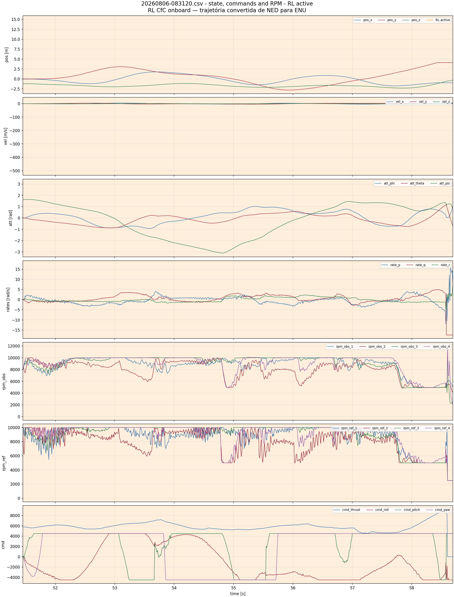
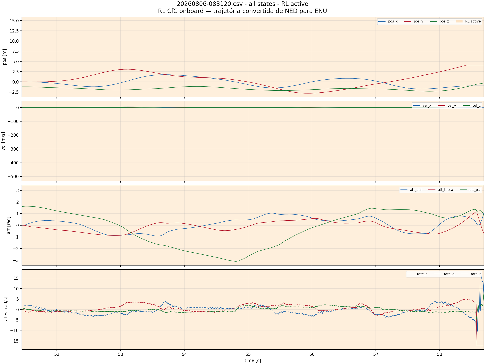
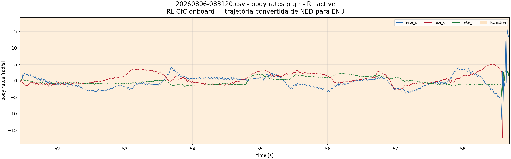
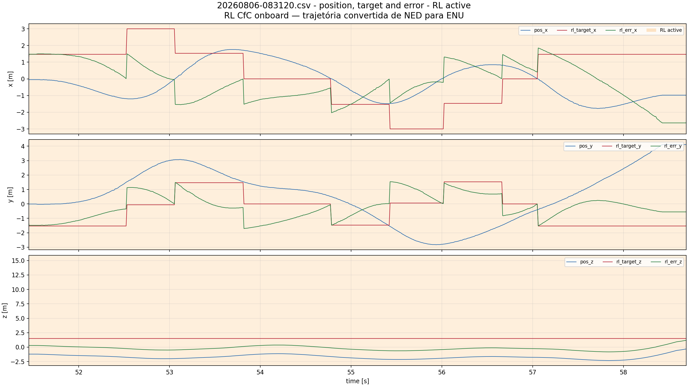
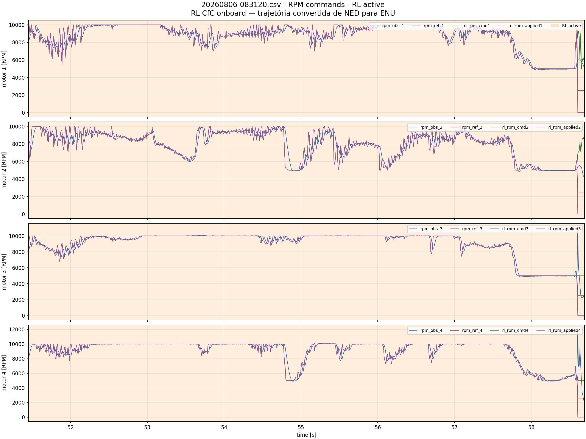
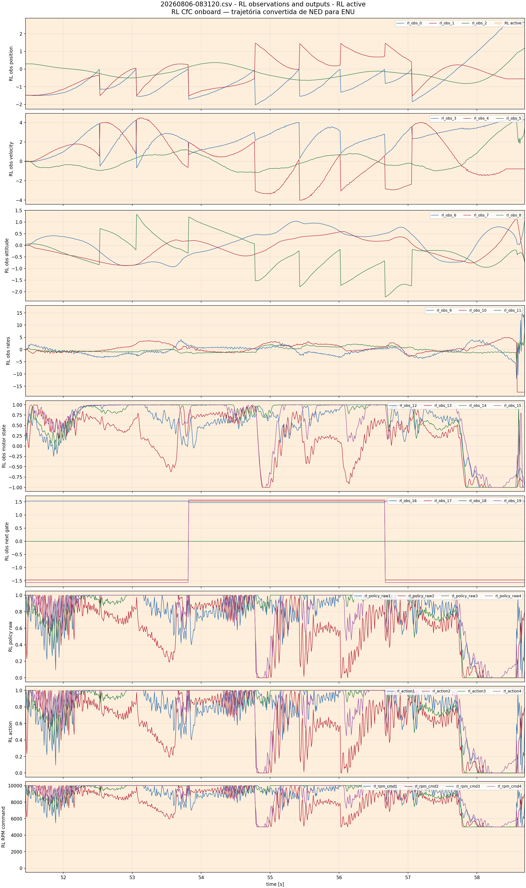
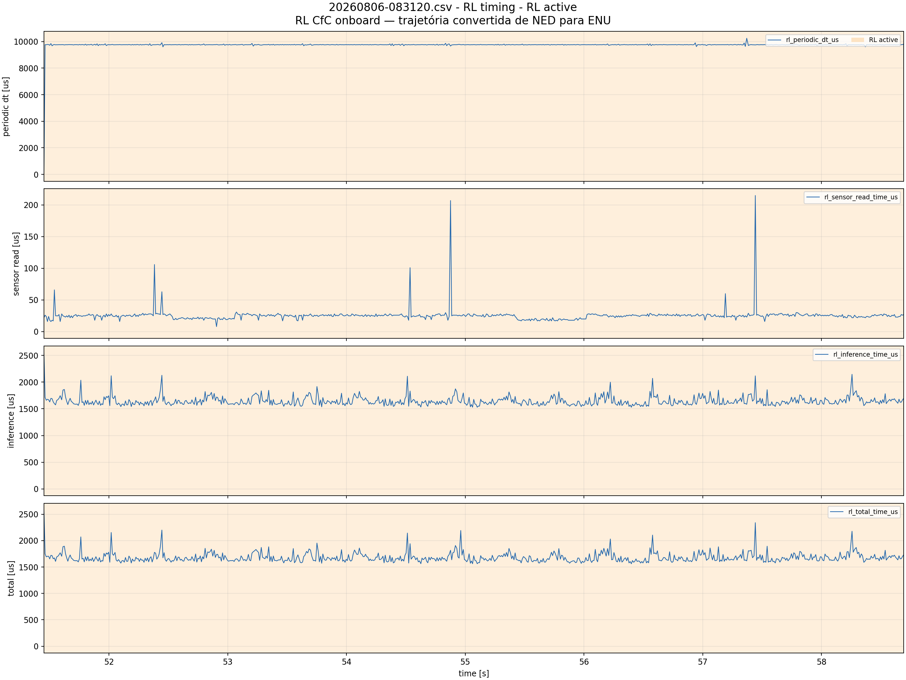
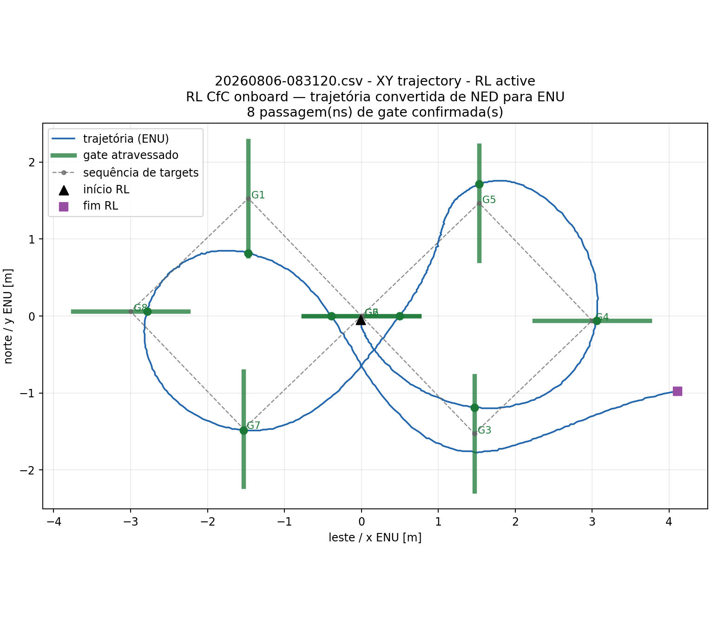
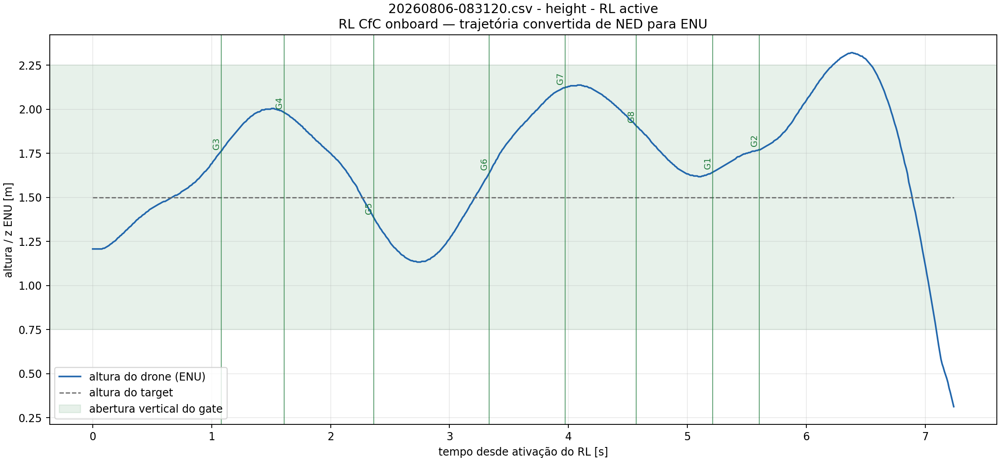
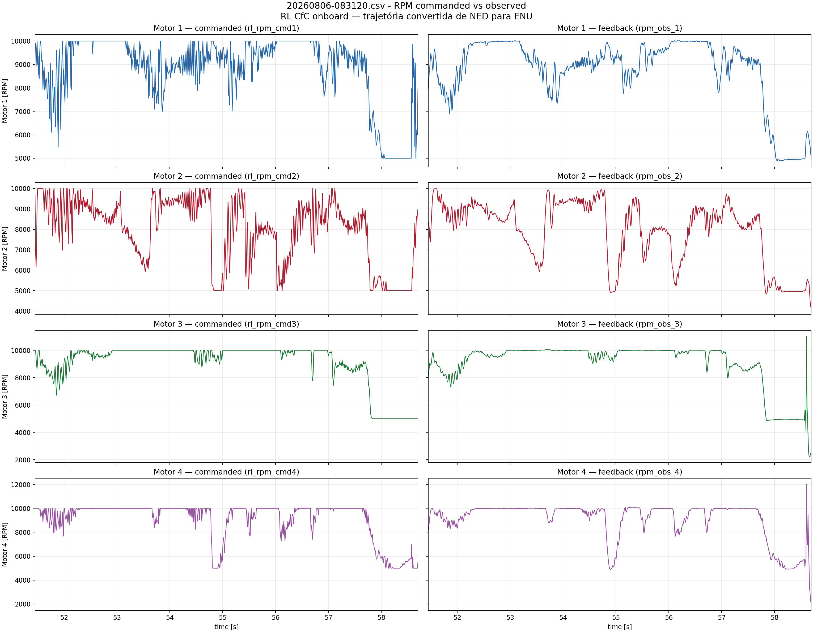

20260806-083120.csv
RL CfC onboard — trajetória convertida de NED para ENU
RL-active intervals: [(51.452785, 58.692039)]
Airborne window uses estimated ground z=0.000 m and 0.10 m clearance.
state, commands and RPM - RL active

all states - RL active

body rates p q r - RL active

position, target and error - RL active

RPM commands - RL active

RL observations and outputs - RL active

RL timing - RL active

XY trajectory

Height

Gate passage check
8 geometric crossing(s) confirmed.
- G3: PASS at t=1.080 s, ENU=(1.470, -1.188, 1.754) m, lateral error=0.343 m, height error=0.254 m
- G4: PASS at t=1.611 s, ENU=(3.059, -0.060, 1.984) m, lateral error=0.059 m, height error=0.484 m
- G5: PASS at t=2.363 s, ENU=(1.530, 1.713, 1.385) m, lateral error=0.243 m, height error=0.115 m
- G6: PASS at t=3.333 s, ENU=(0.500, -0.000, 1.637) m, lateral error=0.500 m, height error=0.137 m
- G7: PASS at t=3.970 s, ENU=(-1.530, -1.485, 2.122) m, lateral error=0.015 m, height error=0.622 m
- G8: PASS at t=4.569 s, ENU=(-2.783, 0.060, 1.906) m, lateral error=0.217 m, height error=0.406 m
- G1: PASS at t=5.214 s, ENU=(-1.470, 0.813, 1.643) m, lateral error=0.717 m, height error=0.143 m
- G2: PASS at t=5.604 s, ENU=(-0.393, -0.000, 1.770) m, lateral error=0.393 m, height error=0.270 m
RPM commanded vs observed
